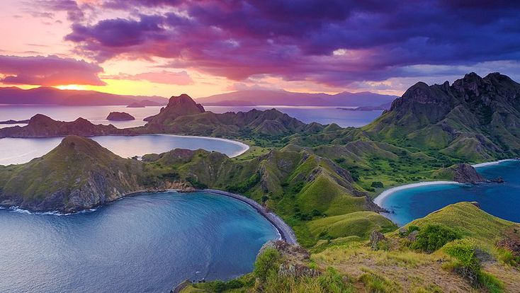
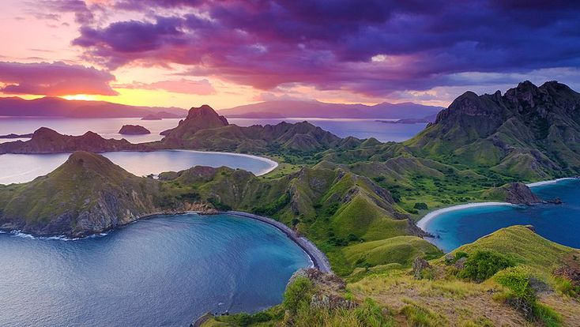

OneIndo
OneIndo 


selamat datang di indonesia
Dikenal sebagai negara kepulauan terbesar di dunia, Indonesia memiliki lebih dari 17.000 pulau yang kaya akan budaya, alam, dan keanekaragaman.

Sebagai negara kepulauan terbesar di dunia, Indonesia merupakan surga bagi para wisatawan yang ingin menjelajahi keindahan alam, kekayaan budaya, dan keragaman tradisi yang mempesona. Dari Sabang hingga Merauke, setiap daerah menyimpan pesona unik yang mencerminkan jati diri bangsa yang beragam namun tetap satu.
Indonesia dikenal dengan keindahan alamnya yang luar biasa, mulai dari pantai berpasir putih di Bali, hutan tropis di Kalimantan, gunung berapi megah di Jawa, hingga danau-danau indah di Sumatra dan Sulawesi. Keanekaragaman hayati yang dimiliki Indonesia menjadikannya salah satu negara dengan destinasi ekowisata terbaik di dunia.
Selain keindahan alam, budaya Indonesia juga menjadi daya tarik utama. Setiap provinsi memiliki bahasa daerah, adat istiadat, seni, dan kuliner khas yang berbeda-beda. Dari batik Yogyakarta, tari Kecak Bali, hingga upacara adat Toraja — semuanya memperlihatkan betapa kaya dan berwarnanya kebudayaan Nusantara.
Tidak hanya itu, keramahan masyarakat Indonesia juga menjadi alasan mengapa banyak wisatawan mancanegara betah berlama-lama di sini. Warga lokal yang ramah dan penuh senyum selalu siap menyambut dengan tangan terbuka, memberikan pengalaman perjalanan yang tak terlupakan.
Berwisata di Indonesia berarti menikmati keseimbangan antara keindahan alam dan kehidupan modern. Infrastruktur pariwisata yang semakin berkembang — mulai dari bandara, penginapan, hingga transportasi antarpulau — membuat perjalanan ke berbagai destinasi menjadi lebih mudah dan menyenangkan.
Temukan sendiri pengalaman menarik mu di Indonesia dan Enjoy Indonesia!
Destinasi terfavorit
Temukan Destinasi Yang Paling Menarik Untuk Mu!
Bali
Yogyakarta

Labuan Bajo